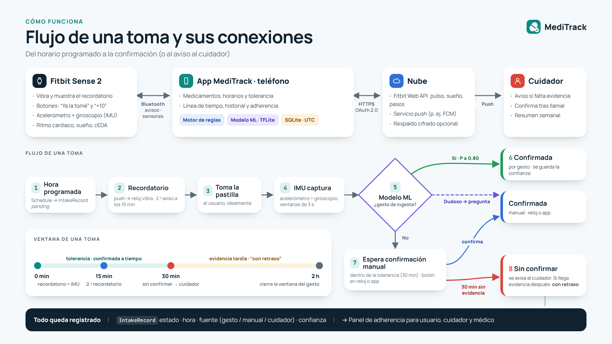
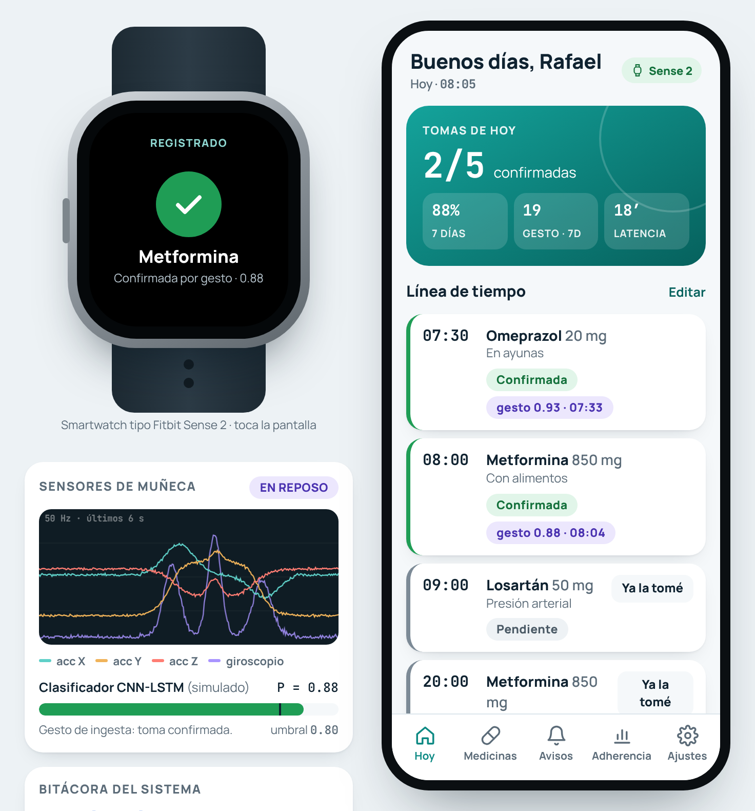

MediTrack
Recordatorios de medicamentos en el reloj, confirmación automática por gesto y aviso al cuidador solo cuando hace falta.
La mitad de los tratamientos crónicos no se sigue como se indicó
de adherencia en enfermedades crónicas en países desarrollados (OMS, 2003). En adultos mayores con varios medicamentos el reto es mayor.
Que tomar la medicina no dependa solo de la memoria
Diseñar, prototipar y evaluar un sistema con smartwatch comercial que recuerde cada toma, la confirme sola con el movimiento de la muñeca y avise al cuidador solo si no hay evidencia.
Recordar
En la muñeca, a la hora exacta, con segundo aviso.
Confirmar solo
Un modelo ML reconoce el gesto de ingesta.
Escalar
Aviso al cuidador solo cuando falta evidencia.
Medir
Adherencia con hora, fuente y confianza de cada toma.
Tres personas, una misma toma
Rafael, 72
Adultos de 60 años o más con enfermedades crónicas y 3 o más tomas al día. Autónomos.
“No quiero que mi hija me esté llamando a cada rato.”
Laura, 44 · cuidadora
Hijos, pareja o cuidadores que no viven con la persona.
“Me basta con saber si algo no va bien.”
Dra. Márquez
Personal de salud e investigadores en adherencia.
“Si la toma de la noche falla, ajusto el esquema.”
≈15 millones de personas de 60 años o más en México (INEGI, Censo 2020): el grupo de edad que más crece.
Confirmación en tres capas
Cada capa solo entra si la anterior no tuvo evidencia. “Sin confirmar” nunca se trata como “no tomada”.
Gesto de ingesta
Acelerómetro + giroscopio y modelo CNN-LSTM. P ≥ 0.80 → confirmada. Si duda, el reloj pregunta.
“Ya la tomé”
Un botón grande en el reloj o la app, dentro de la tolerancia (30 min) y con segundo aviso a los 15.
Aviso escalonado
Sin evidencia al cerrar la tolerancia: avisamos a Laura. Puede cerrar el caso tras llamar.

Un día con MediTrack, en el navegador
- Smartwatch y teléfono sincronizados con un reloj simulado.
- Simula el gesto: pastilla, beber agua (dudoso) o nada (escalamiento).
- Señal IMU en vivo y probabilidad del clasificador.
- Línea de tiempo, medicinas, avisos, adherencia y ajustes.
christopherargenis.github.io/MediTrack/prototipo.html

Fitbit Sense 2 y su límite técnico
Por qué Sense 2
- Muestra en la muñeca las notificaciones del teléfono: el recordatorio no necesita API.
- cEDA continuo: permite estudiar el estrés tras el recordatorio (en el Sense original el escaneo es manual).
- Web API: ritmo cardiaco, pasos, sueño y temperatura. Intraday por minuto requiere aprobación.
La Web API entrega valores ya procesados, no las muestras del acelerómetro, y el Sense 2 no admite apps de terceros en el reloj.
A · MVP en Sense 2 (avisos, botón y datos fisiológicos). El modelo se valida fuera de línea.
B · Módulo de gesto en Wear OS, que da acceso a los sensores.
C · Sense 1.ª gen. (con SDK) solo para recolectar datos.
Tres fuentes de datos
scheduled_time · event_timestamp · medication_id · status + fuente y confianza de la confirmación.
Ritmo cardiaco, pasos, sueño y temperatura, ya procesados. Intraday: /activities/heart/date/{date}/1d/1min
| Dataset (entrenar y validar) | Contenido | Uso en MediTrack |
|---|---|---|
| DoseMate · 2024 | IMU de muñeca en entorno naturalista, mano dominante y no dominante. Público en GitLab. | Entrenar el clasificador |
| Free-Living · Glasgow 2024 | 228 gestos anotados, arquitectura CNN-LSTM, variabilidad por edad y género. | Validación externa |
| RHB Log / ActSafe · 2023 | Restricciones temporales médicas. | Predecir violaciones de horario |
| AI for Elderly Care · Kaggle 2025 | Salud, seguridad y recordatorios de adultos mayores. | Probar el panel y las reglas |
De la muñeca a una decisión
Señal
Acelerómetro + giroscopio, 6 canales, ≈50 Hz.
Ventanas
Ventanas de 3 s con 50 % de traslape, normalizadas.
CNN-LSTM
Patrón local (levantar, girar, bajar) + orden temporal.
Decisión
≥ 0.80 confirma · 0.5–0.8 pregunta · menor ignora. Solo dentro de la ventana de la toma.
En el dispositivo
TFLite cuantizado y model_version en cada evento.
Leave-one-subject-out · precisión, recall y F1 · falsos positivos por hora (comer, beber, fumar) · desglose por edad, género y mano dominante · calibración del umbral.
El esquema original, más lo necesario para medir
Medication
- id
- name · dose
- instructions
- frequency_hours
- is_active
Schedule
- id
- medication_id →
- scheduled_time
- days_of_week
IntakeRecord
- id
- scheduled_datetime
- confirmed_datetime
- status
- confirmation_source
- gesture_confidence
- tolerance_minutes
GestureEvent
- id
- intake_record_id →
- confidence
- model_version
- decision
Caregiver
- id
- name · phone
- relationship
- consent_at
Notification
- id
- recipient_type
- kind
- channel · status
WearableDaily
- date
- resting_hr · steps
- sleep_minutes
En morado
Lo nuevo frente al documento original. Esquema y prueba en db/.
Qué agrega MediTrack sobre DoseMate
| Limitación de DoseMate (2024) | Mejora en MediTrack |
|---|---|
| Solo clasifica el gesto: no gestiona recordatorios. | Sistema completo: recordatorio, gesto, cuidador e historial. |
| Depende de la precisión del clasificador. | Confirmación multicapa y gestos fuera de la ventana ignorados. |
| No integra datos fisiológicos. | Sueño, pulso y actividad para estimar el riesgo de olvido. |
| No considera la carga del cuidador. | Aviso escalonado y panel de tendencias. |
Diseñar para confiar
Accesibilidad
- Una acción principal por pantalla
- Texto ≥ 16 px, contraste AA
- Lenguaje sin culpa
- Funciona sin el reloj
Privacidad
- Datos de salud = datos sensibles (LFPDPPP)
- Consentimiento expreso y revocable
- Procesamiento local, sin guardar la señal cruda
Clínico
- No es un dispositivo médico
- No recomienda dosis
- “Sin confirmar” ≠ “no tomada”
- Tolerancia según el medicamento
Cómo sabremos que funciona
| Métrica | Meta |
|---|---|
| Adherencia confirmada | ≥ 80 % |
| Latencia mediana | ≤ 10 min |
| Confirmadas por gesto | ≥ 50 % (fase 2) |
| Falsas alarmas al cuidador | ≤ 1 / semana |
| Usabilidad (SUS) | ≥ 68, con meta de 75 |
Plan
- Fuera de línea: modelo con DoseMate y Glasgow.
- Usabilidad: 5 a 8 adultos mayores y cuidadores con el prototipo.
- Piloto de 4 semanas: 2 de línea base y 2 con MediTrack.
Siguientes pasos
Documento, prototipo, flujo y esquema de BD
hechoRecordatorios, estados, botón, cuidador y panel
6–8 semCNN-LSTM entrenado y evaluado fuera de línea
4–6 semGesto en el reloj elegido
4 semEstudio de 4 semanas y SUS
6 sem